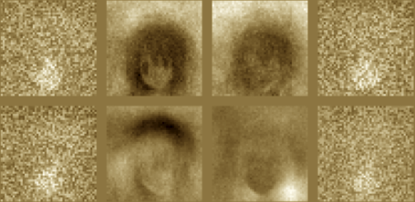
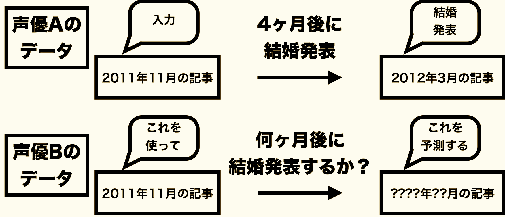

WORKS
[sample] はサンプル版の pdf ファイルにリンクしています．

コミックマーケットC86 (2014.08)
コミックマーケットC86 (2014.08)
声優統計第四号
- 序文: 声優と統計とシンギュラリティ -- 声優統計の目指す未来 -- (@MagnesiumRibbon) [sample]
- 種田梨沙が出演すると百合アニメか?: Propensity score matching による検討 (@Med_KU and @biochem_fan)
- 声優ファンが今推したいアイドル (@kkobayashi)
- チケット取得困難度と個人の嗜好を考慮したオタクイベント参加予測モデル (@y_benjo)
- [WIP] 声優固有のアニメ顔は存在するか: Deep Learning を用いたアニメ画像キャスティング一致問題 (@y_benjo)
- 声優統計未解決問題 (@y_benjo and @MagnesiumRibbon)
- 序文: 声優と統計とシンギュラリティ -- 声優統計の目指す未来 -- (@MagnesiumRibbon) [sample]
- 種田梨沙が出演すると百合アニメか?: Propensity score matching による検討 (@Med_KU and @biochem_fan)
- 声優ファンが今推したいアイドル (@kkobayashi)
- チケット取得困難度と個人の嗜好を考慮したオタクイベント参加予測モデル (@y_benjo)
- [WIP] 声優固有のアニメ顔は存在するか: Deep Learning を用いたアニメ画像キャスティング一致問題 (@y_benjo)
- 声優統計未解決問題 (@y_benjo and @MagnesiumRibbon)

コミックマーケットC85 (2013.12)
声優統計第三号
- 序文: 声優統計における言語情報と非言語情報 -- 『声優統計』第三号に寄せて -- (@langstat)
- 声優も「箱で推せ！」 -- 声優ファンにおける推し声優コミュニティの検出 -- (@kkobayashi) [sample]
- ソーシャルな声優イベント参加履歴に基づく声優ファン行動の定量化分析 (@MagnesiumRibbon) [sample]
- アニメ，声優，二次創作における百合ネットワークの考察 (@Med_KU and @biochem_fan)
- 複数の声優によるセリフの音響的類似性の考察:不愉快です (@Med_KU)
- 続・続・声優統計入門 -- 初めてのテキストマイニング -- (@R_Linux)
- 今会いに行ける声優: ブログに登場する位置情報単語を用いた声優の出現位置予測 (@y_benjo)
- 声優の結婚時期予測2013: 2012年予測の精度，変化 (@y_benjo)
- Twitterからみる声優ファンのネットワーク構造 (@ysks3n)

コミックマーケットC84 (2013.08)
声優統計第二号
- 序文 「日本声優統計学会に寄せて」 (@toddler2009)
- トピックモデルを用いたニコニコ動画コメントデータの声優トピック流行推移解析 (@Med_KU and @biochem_fan)
- 声優活動における「元アイドル」の影響予測 (@kkobayashi)
- 声優ブログの「ご報告」エントリ自動検出システムの検討 (@MagnesiumRibbon) [sample]
- 続・声優統計入門 −− 貧乳と巨乳の狭間で −− (@R_Linux)
- 音声による既婚声優の判別問題 (@y_benjo) [sample]
- Labeled LDAを用いた声優のニコニコ動画における特徴的コメントの抽出 (@y_benjo)

コミックマーケットC83 (2012.12)
声優統計第一号
- 日本声優統計学会発足のご挨拶 -声優と科学の融合を目指して (@MagnesiumRibbon) [sample]
- Wikipediaの声優PVデータ特性とブレイク判定手法 (@kkobayashi)
- キャスティング情報のbag-of-声優モデルを用いた音響監督推定問題 (@MagnesiumRibbon)
- 声優統計入門 (@R_Linux)
- ブログを用いた女性声優の結婚時期予測問題 (@y_benjo) [sample]
- アニメの内容及びキャスティングを用いないDVD売上予測問題 (@y_benjo)